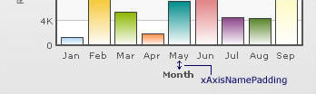
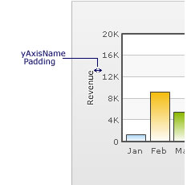

PowerCharts XT lets you define various paddings and margins. We will see them one by one.
Chart Margins
By default, PowerCharts XT provides some padding between the chart border and the canvas. This is called the chart margin and each of the margins - left, right, top, and bottom chart can be set individually.

Chart Left Margin
The amount of empty space that you want to put on the left side of your chart is called chart left margin. Nothing is rendered in this space. The XML/JSON code used to configure the same is:
<chart chartLeftMargin="15">
Chart Right Margin
The amount of empty space that you want to put on the right side of your chart.
<chart chartRightMargin="15">
Chart Top Margin
The amount of empty space that you want to put on the top of your chart.
<chart chartTopMargin="10">
Chart Bottom Margin
The amount of empty space that you want to put on the bottom of your chart.
<chart chartBottomMargin="10">
Caption Padding
This attribute lets you define the space between the caption of the chart and the top of the chart canvas. But when you have a sub-caption defined in the chart, it controls the space between the sub-caption and the top of the chart canvas.

Example:
<chart captionPadding="15">
x-Axis Name Padding
Using this, you can set the distance between the top of x-axis title and the bottom of data labels (or canvas, if data labels are not shown).
Example:
<chart xAxisNamePadding="10">
y-Axis Name Padding
The amount of space that you want to set between the y-axis name and values.
Example:
<chart yAxisNamePadding="10">
y-Axis Values Padding
This allows you to set the space between the left end of the chart canvas and the y-axis values.
Example:
<chart yAxisValuesPadding="5">
Label Padding
This attribute sets the vertical space between the canvas bottom edge and the data labels.

Example:
<chart labelPadding="3">
Value Padding
It controls the space between your columns or anchors and the value text boxes.

Example:
<chart valuePadding="3" >
Canvas Padding
For Line, Spline or Area charts, the padding between the canvas border and the position where the chart begins to draw is called canvas padding.

Example:
<chart canvasPadding="30">
Note: All the Line, Spline and Area charts automatically adjusts the canvas padding (the space between the canvas border and the position of the first and last datapoints) to accommodate long labels. This ensures that the first and last X axis labels are not displayed outside the canvas border and they never overlap each other. You might want the chart not to adjust the canvas padding automatically . For this, you need to set the attribute canvasPadding='0'. This will ensure that the canvas padding is not adjusted automatically by the chart. However, to accommodate long labels, the chart will automatically adjust the right and left canvas margins (space between the canvas borders and the chart borders). For more details click here.